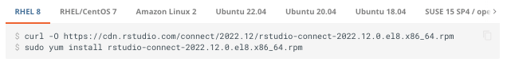

Style Guide
This guide serves as a reference for anyone authoring, editing, or reviewing the pro-product documentation.
Grammar
Active/passive voice
- Avoid passive voice unless it is unavoidable.
- Use the active form of nouns (displays -not- displayed).
Per the Microsoft Manual of Style:
- Active voice emphasizes the person or thing performing the action.
- It’s more direct than passive voice, which can be confusing or sound formal.
Please review the Posit Voice section for additional information.
Parentheses
APA Style 6th Edition:
Punctuation goes inside of parentheses when the entire sentence is enclosed in the parentheses.
Punctuation goes outside of parentheses when only a portion of a sentence is enclosed in parentheses.
Contractions
Avoid
Quotation marks
Punctuation - (inside vs. outside):
Inside quotation marks. Piece of code = outside.
Examples:
- grammar: “My friend Mary,” she said, “is crazy!”
- code: To start the program, run
runApp.
- grammar: “My friend Mary,” she said, “is crazy!”
Oxford (serial) comma
- Include the final comma in a list of three or more items. The cat liked to jump, eat, and meow.
Dashes
- En dash vs. Em dash:
- En dash: A dash the width of an “n”. Use for ranges or spans of numbers.
- Em dash: A dash the width of an “m”. Can take the place of colons.
i.e. vs. e.g.
- i.e.: In other words
- e.g.: For example
etc.
- When used in the middle of a sentence, and is not enclosed in parentheses, include a period and a comma after the abbreviation.
- If used at the end of a sentence, simply use a period.
- If enclosed in a parentheses and is at the end of the sentence, use a period. No comma is needed.
Content
Titles and headings
- Titles and H1s: Title Case
- All other headings: Sentence case
Especially for docs.posit.co - proper:
- If you are going to use a heading to represent a step/procedure, then the name of the heading should include the word “Step”.
- For example, an H2 representing a step/procedure would be written as, “Step 1: Install RStudio Connect”.
This is extremely important from an Accessibility perspective, especially for those who may be using a screen reader to listen to our documentation.
Callouts
Callouts, sometimes referred to as “admonitions”, are used to draw attention to content and/or information that doesn’t fit into the normal flow of text.
Quarto and MkDocs Material offer different types of callouts.
Items marked with an
- Quarto’s callout types & syntax
- MkDocs Matieral callout types & syntax
- Lists, procedures, admonitions, tables, images, snippets, and code blocks can be nested within admonition blocks.
| Callout type | Definition |
|---|---|
| example |
Used for steps/procedures. |
| important | If this information is ignored, it is unlikely that the user will be able to complete the task or make configuration changes in the future. |
| info |
Additional information, such as, “Our recommended installation instructions for R allow you to make multiple versions of R available.” |
| note | Information that helps the user, provides additional information, clarity, and may increase efficiency. |
| question |
Typically reserved for when a user may require help information, solutions, support, etc. For example, “If you require help information, run $ bash ./rsc-installer.sh help<LICENSE-KEY>.” |
| quote |
When you directly quote the works of others in your documentation. |
| success |
Indicates that the install and/or configuration is complete. |
| tip | Information that makes the user’s experience easier, may contain additional functionality that is not required for installation or configuration or has information that an advanced user may be interested in. |
| warning / caution | Warning: Explains dangers that may result in personal injury or death. Caution: Explains hazards that could damage a product, including data loss. |
Reusing content
We have several options for conveinently reusing content across our documentation. This allows us to easily duplicate information, without needing to update it in several places. Common use cases for this would be version numbers, common callouts/warnings, etc.
Snippets / macros
MkDocs Material, only
You can include the contents of another file, into your current file, by using a snippet. If the included file is updated, the updates automatically update anywhere that the snippet has been used.
MkDocs Material has a complete description and the notation of snippets.
Notation:
--8<-- "filename.ext"
Includes
Quarto, only
To include a file, add the shortcode at the location in your document where you want it included:
A very important thing to understand about includes is that they are equivalent to copying and pasting the text from the included file into the main file. This means that relative references (links, images, etc.) inside the included file resolve based on the directory of the main file not the included file.
Notation:
{{< include _content.qmd >}}
Quarto has a complete description and the notation of includes.
Cross references
Quarto, only
Cross-references make it easier for readers to navigate your document by providing numbered references and hyperlinks to various entities like figures and tables.
See the Quarto documentation for additional information.
Formatting text instructions
Bold
From the View menu, click Publish.
- When you must refer to a button, check box, or other options, use bold formatting for the name.
- Sentence style unless you need to match the UI.
“Quotes”
In the Password field, type “1234”.
- User-supplied values.
Inline-code & configuration properties
In the Connect configuration file, navigate to the Server.Address property.
- Inline-code/configuration properties should be within backticks.
Procedures/steps
Action → Result should always be part of the action step
Multi-step procedures, use:
Single-step procedures, use:
Examples:
- Click OK. A dialog displays.
- The configuration section allows you to configure your product. Deleting this file may result in a loss of data.
Simple sequences
You can use a right angle bracket to abbreviate simple sequences (steps).
- There should be a space before and after the bracket
- Do not bold the bracket
Examples:
- Select File > New Document > Markdown.
- Select Projects > New and click Markdown.
Lists
Bulleted lists:
Can be used for lists or procedures.
Ending punctuation: Be consistent. For each item in a list, stick to using ending punctuation or don’t use it at all.
If there are two items/steps or fewer, then use bullet points or nothing at all.
When giving a user multiple options, for example:
To install RStudio, do one of the following:
- Manual installation
- Guided installation
Numbered lists
- Can be used for lists or procedures.
- Use ending punctuation.
- Use when a procedure needs to be specifically referenced.
- Use to describe things that need to be done in a sequential order
Please see Procedures/steps for more information.
Code
We use code blocks throughout the documentation that perform syntax highlighting via the CodeHilte extension and the MkDocs-Material theme.
CodeHilte uses Pygments for syntax highlighting of various languages. Pygments supports a number of different languages via different lexers.
For the list of languages and when to use them, see the Code section in the Pro Product Doc - Cheatsheet
Inline-code
Inline-code is typically used when part or all of a command is used within a step/sentence. For example:
If you require help information, in a terminal run $ bash ./rsc-installer.sh help<LICENSE-KEY>
Use a backtick before and after the code to format:
`$ bash ./rsc-installer.sh help<LICENSE-KEY>`Calls to code
Calls to R, Python code, shell commands, & other languages.
Denote calls with the accent grave (example: runApp). Use the accent marks/backticks wherever appropriate. Ensure that the text within already written accent marks exactly matches the code, since it may change how code is run and result in errors.
If the documentation framework doesn’t support accent graves, use code blocks, inline code, or whatever the framework supports.
Code Blocks
MkDocs Material
This section needs updating based on newly introduced styles from MkDocs Material theme.
We use code blocks throughout the documentation that perform syntax highlighting via the CodeHilte extension and the MkDocs-Material theme.
CodeHilte uses Pygments for syntax highlighting of various languages. Pygments supports a number of different languages via different lexers.
| Language type | Usage |
|---|---|
| console or terminal | For commands that are to be run in a terminal |
| text | For text that needs to be in a code block but with no syntax highlighting (e.g., log files) |
| cfg or ini | For contents of an ini-style config file with key=value pairs, such as an RSP/RSC/RSPM configuration file. Both of these are aliases/short names that call the same “IniLexer”. |
| r | For R code chunks |
| python | For Python code chunks |
| bash | For showing the contents of a bash script (although, this type of content is rare in our docs. However, it is being used almost 100% currently, and will be updated in the future). |
Code blocks with titles
In MkDocs Material, the following is an example of a code block titled “Terminal”:
Syntax:
``` bash title="Terminal"
$ sudo systemctl status rstudio-connect
```In Quarto, you can add a “Code Filename”: https://quarto.org/docs/output-formats/html-code.html#highlighting
Tabbed code blocks
Tabbed code blocks can be used as an OS selector, version selector, etc.
Commonly, we used tabbed code blocks for installation and upgrade commands that may be slightly different based on the user’s OS.
In MkDocs Material, the following is an example of a tabbed code block:

Syntax:
=== "Ubuntu 20.04"
```
$ sudo apt-get install gdebi-core
$ curl -O https://cdn.rstudio.com/connect/{{ vars.connect.rsc.short_version }}/rstudio-connect_{{ vars.connect.rsc.full_version }}~ubuntu20_amd64.deb
$ sudo gdebi rstudio-connect_{{ vars.connect.rsc.full_version }}~ubuntu20_amd64.deb
```
=== "Ubuntu 18.04"
```
$ sudo apt-get install gdebi-core
$ curl -O https://cdn.rstudio.com/connect/{{ vars.connect.rsc.short_version }}/rstudio-connect_{{ vars.connect.rsc.full_version }}~ubuntu18_amd64.deb
$ sudo gdebi rstudio-connect_{{ vars.connect.rsc.full_version }}~ubuntu18_amd64.deb
```Numbers
As a general rule, spell out single-digit numbers, and use numerals to represent double-digit numbers, e.g., one and. 10.
Images
Images should NEVER be used to replace written steps/be essential to completing a task (see Accessibility).
- Ensure that images are legible, do your best to exclude blank space, and exclude things that are not necessary for the purpose of the image.
- When referencing something from the UI, use an image “step tag” or “callout box/shape”.
- Additionally, the image should always follow the reference to the image and the result of the action should come after the image.
Image borders
Since our documentation UI and our product UIs are so similar, in some cases, we need to add image borders to have add distinction so it is clear where the image “starts and ends”.
It would be best to add a CSS/SCSS element that automatically adds a border to ALL images automatically.
Alt text
Images should include alternate text for screen-reader users. Informative text should be no more than 150 characters, roughly. Avoid including the words “image” or “graphic” because the screen-reader software automatically indicates that it is an image. However, it is acceptable to identify a screenshot as such. If the image is essential to accomplishing the task at hand, then you must include the necessary information in combination with the image’s alternate text and the technical documentation.
Acronyms
- Spell out the first occurrence of an acronym per topic/page/file, followed by the acronym in parentheses.
- You do not need to define common acronyms, such as IP.
Example:
- The Central Intelligence Agency (CIA) is a civilian foreign intelligence service of the federal government of the United States. The CIA has no law enforcement function.
Gerunds & Tech jargon
Avoid.
Proper nouns and UI elements
- Are always capitalized.
- However, always follow the same capitalization format that is displayed in the UI when referring to product screens directly.
- For example, if a menu name isn’t capitalized in the UI, write it exactly as it appears. If it is in all caps, use all caps when referencing it in the docs.
Terminology references
| Use | Do NOT use | How to use |
|---|---|---|
| check box | checkbox | N/A |
| clear | uncheck | Check boxes, radio buttons |
| click | N/A | Buttons, menus, cursors, etc. |
| cursor / mouse cursor | mouse | Hover your cursor over the map. In the desired area, click-and-drag your cursor to draw a shape. |
| dialog box | dialog or dialogues | It is ok to use “dialog” in other contexts, especially for a technical audience. A dialog box contains controls, such as command buttons and list boxes through which users can carry out a particular command or task. For example, a Save As dialog box the user must indicate in which folder and under what name the doc should be saved. |
| drop-down | dropdown or drop down | Can be used as a drop-down list, drop-down menu, drop-down arrow, etc. |
| enter | Do not use it as a synonym for “type”. | Do not use it as a synonym for type except to indicate that a user can interact with the UI by multiple methods, such as either typing text or clicking a selection from a list. Additionally, if you are referring to the keyboard key. For example: Type your password, and then press Enter. |
| field | box | Search field, Name field, etc. |
| pop-up | popup | Do not use it as a noun. Do not use it as a verb to mean open or appear. It is ok to use “pop-up window”. |
| select | check | Check boxes, radio buttons, items in a list box, drop-downs, etc. |
| toolbar | tool bar | Contains buttons and can have submenus. |
| type | “insert or type in” | Use when directing the user to enter information. For example, Type your password. Use when directing the user to enter specific information. In the field, type “12345”. |
| open source | open-source | Should be lowercase (e.g., the open source community) unless speaking of a specific thing that has the words “open source” in its title (e.g., the Open Source Initiative) |
| N/A | ||
| user-interface | user interface | N/A |
Didn’t find what you are looking for?
Check out the Microsoft Manual of Style to use as a reference. Don’t think of it as a definitive rulebook but as a reference to help you if you get stuck. Many of the references included in this guide came straight out of the Microsoft Manual of Style pdf.
The web version is located here.